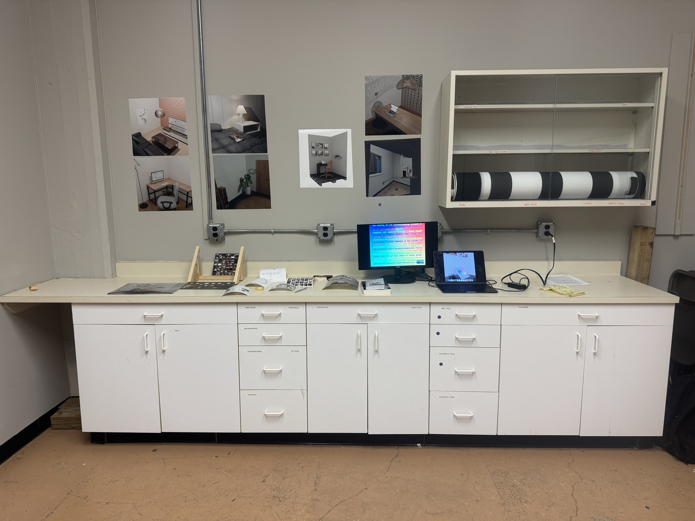
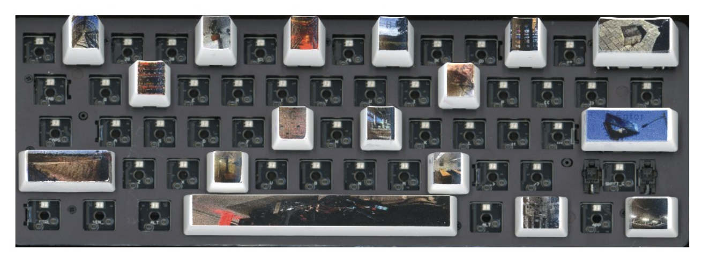
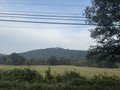
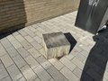
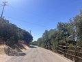

I am an artist, writer, and engineer between NYC and Boston.
This summer, I am working at IBM Research on their incubation team.
My design and commercial work is done through Absent Rook Hypermedia.
